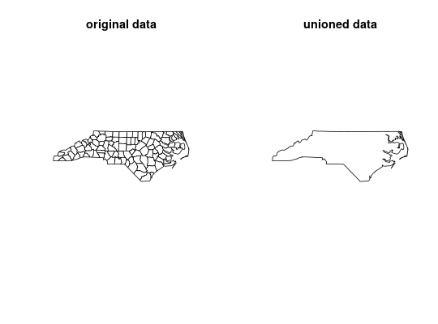

Combine several feature geometries into one, with or without resolving internal boundaries
st_parallel_union(x, threads = 1)
| x | object of class |
|---|---|
| threads |
|
A single geometry sfc object with resolved boundaries.
This function is essentially just a wrapper for
st_union. See the documentation for
st_union for more information.
# load data nc <- sf::st_read(system.file("shape/nc.shp", package = "sf"))#> Reading layer `nc' from data source `/home/jeff/R/x86_64-pc-linux-gnu-library/3.4/sf/shape/nc.shp' using driver `ESRI Shapefile' #> Simple feature collection with 100 features and 14 fields #> geometry type: MULTIPOLYGON #> dimension: XY #> bbox: xmin: -84.32385 ymin: 33.88199 xmax: -75.45698 ymax: 36.58965 #> epsg (SRID): 4267 #> proj4string: +proj=longlat +datum=NAD27 +no_defs# create unioned data ncu <- st_parallel_union(nc, threads = 1) # plot data for visual comparison par(mfrow = c(1, 2)) plot(sf::st_geometry(nc), main = "original data", col = "white") plot(ncu, main = "unioned data", col = "white")